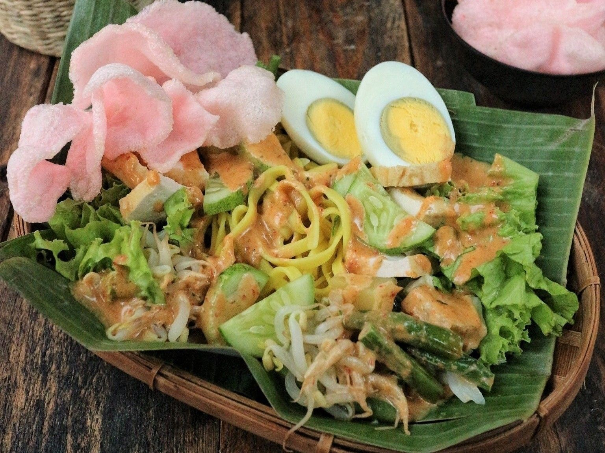

Gado - Gado
Gado-Gado merupakan sajian khas Betawi yang terdiri dari berbagai campuran sayuran, tempe, tahu, kentang, dan telur rebus lalu disajikan dengan siraman bumbu kacang nan gurih. Sayuran yang digunakan antara lain kangkung, bayam, labu siam, kacang panjang, kubis, dan taoge. Sebagai pendampingnya terdapat kerupuk, potongan lontong, ketupat, atau nasi putih.
Sepintas, tampilan gado-gado memiliki kemiripan dengan beberapa makanan khas daerah lain, seperti lotek (Jawa Barat dan Jawa Tengah) atau pecel (Jawa Timur). Bedanya, bumbu kacangnya gado-gado tidak menggunakan kencur seperti lotek dan pecel. Sedangkan untuk isiannya, gado-gado tidak hanya menggunakan sayuran, tetapi menambahkan telur, tahu, tempe, dan kentang sebagai isiannya. Tidak ada yang tahu persis asal-muasal gado-gado, namun sebagian besar referensi bebas cenderung mengasosiasikan gado-gado sebagai hidangan asli Betawi.
Kata 'gado-gado' dalam kamus Besar Bahasa Indonesia (KBBI) berarti makanan yang terdiri atas sayur-sayuran, kentang, tempe, tahu, telur rebus, dan lain-lain diberi bumbu sambal kacang dan sebagainya. Gado-gado dalam KBBI juga diartikan sebagai 'campur aduk, tidak karuan'
Dalam buku 'Batavia 1740: Menyisir Budaya Betawi' (2010) karangan Windo Adi terungkap bahwa penemu sesungguhnya sajian ini adalah masyarakat Kampung Tugu yang aslinya keturunan Portugis dari daerah Bangladesh, Sri Lanka, dan India. Pada abad ke-17, mereka diboyong VOC ke Batavia dari koloni-koloni bekas Portugis untuk dijadikan budak. Kemudian mereka membangun kampung sendiri yang kemudian dimerdekakan dan disebut 'Kaum Mardijkers' yang berarti orang merdeka. Di kampung yang kemudian disebut Kampung Tugu itulah muncullah kebudayaan dan tradisi sendiri, salah satunya tradisi kuliner gado-gado.
Resep Membuat Gado - Gado
Bahan isi:- Kol sebanyak 150 gram diiris-iris kecil
- Bayam sebanyak 175 gram
- Mentimun sebanyak 200 gram diiris-iris kecil
- Tauge sebanyak 175 gram
- Kentang rebus sebanyak 300 gram diiris dadu
- Kacang panjang sebanyak 200 gram
- Tahu kuning sebanyak 300 gram digoreng dan diiris dadu
- Telur rebus dibelah menjadi dua
- Kerupuk dan emping
- Bawang goreng
- Cabe rawit sebanyak 4 buah
- Cabe merah sebanyak 4 buah
- Gula merah sebanyak 4 sdt
- Terasi bakar sebanyak 1 sdt
- Air asam jawa sebanyak 1,5 sdm
- Garam sebanyak 2 sdt
- Kacang tanah sebanyak 175 gram ditumbuk halus
- Kacang kenari sebanyak 175 gram ditumbuk halus
- Kecap manis
- Air sebanyak 750 ml
- Rebus semua sayuran hingga lunak lalu tiriskan.
- Haluskan cabe merah, terasi, cabe rawit, garam sampai halus. Kemudian masukkan kacang kenari dan kacang tanah.
- Tambahkan air asam, air, kecap manis, dan gula merah. Campur sampai rata kemudian masak di atas wajah hingga mendidih. Tunggu sampai dingin.
- Siapkan piring kemudian tata sayuran, kentang, tahu, dan telur. Kemudian tuang saus kacang di atasnya. Taburi dengan bawang goreng dan beri tambahan emping goreng